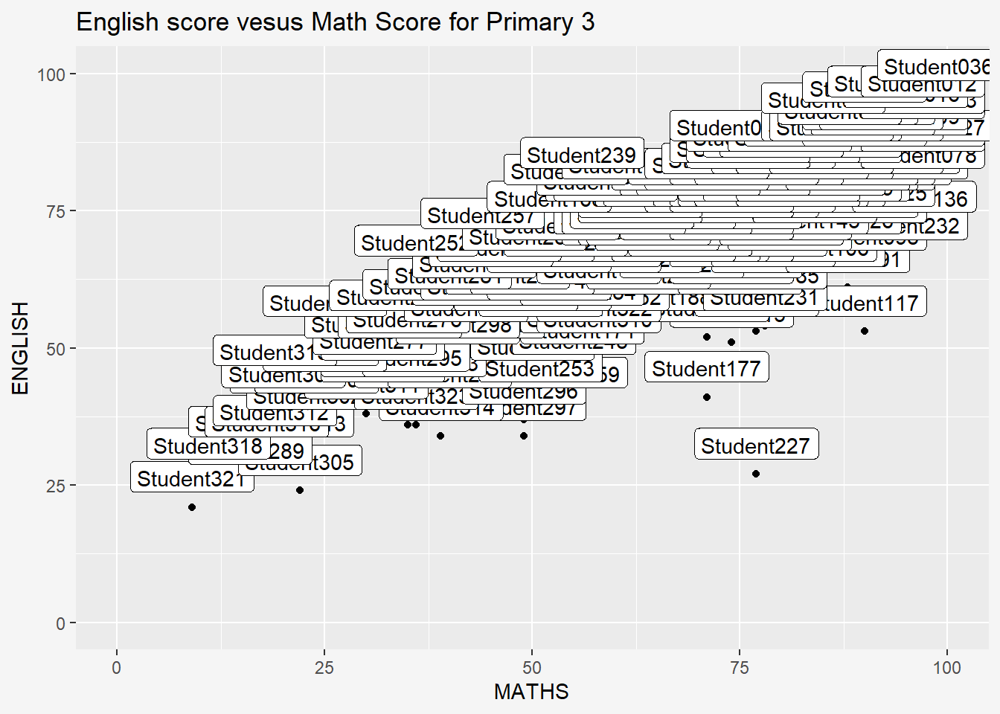
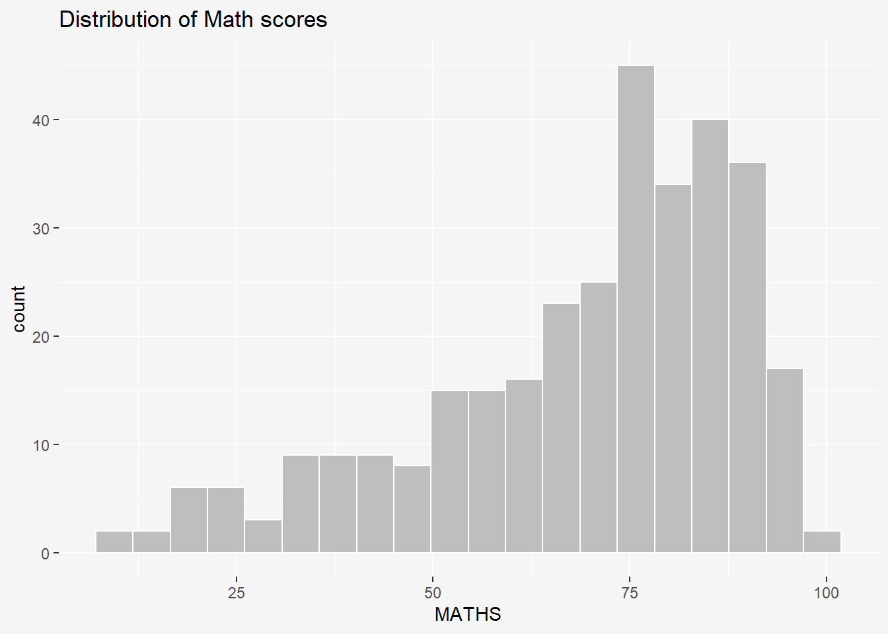

Hands-on Exercise 2: Beyond ggplot2 Fundamentals
1 Overview
In this chapter, we will be learning about ggplot2 extensions for creating more elegant and effective statistical graphics. The goals of this exercise is to:
- control the placement of annotation on a graph by using functions provided in ggrepel package,
- create professional publication quality figure by using functions provided in ggthemes and hrbrthemes packages, and
- plot composite figure by combining ggplot2 graphs by using patchwork package.
2 Getting Started
In this exercise, beside tidyverse, four R packages will be used. They are:
- ggrepel: an R package provides geoms for ggplot2 to repel overlapping text labels.
- ggthemes: an R package provides some extra themes, geoms, and scales for ‘ggplot2’.
- hrbrthemes: an R package provides typography-centric themes and theme components for ggplot2.
- patchwork: an R package for preparing composite figure created using ggplot2.
Code chunk below will be used to check if these packages have been installed and also will load them onto your working R environment.
- The code chunk below imports exam_data.csv into R environment by using
read_csv()function of readr package. - readr is one of the tidyverse package.
Rows: 322
Columns: 7
$ ID <chr> "Student321", "Student305", "Student289", "Student227", "Stude…
$ CLASS <chr> "3I", "3I", "3H", "3F", "3I", "3I", "3I", "3I", "3I", "3H", "3…
$ GENDER <chr> "Male", "Female", "Male", "Male", "Male", "Female", "Male", "M…
$ RACE <chr> "Malay", "Malay", "Chinese", "Chinese", "Malay", "Malay", "Chi…
$ ENGLISH <dbl> 21, 24, 26, 27, 27, 31, 31, 31, 33, 34, 34, 36, 36, 36, 37, 38…
$ MATHS <dbl> 9, 22, 16, 77, 11, 16, 21, 18, 19, 49, 39, 35, 23, 36, 49, 30,…
$ SCIENCE <dbl> 15, 16, 16, 31, 25, 16, 25, 27, 15, 37, 42, 22, 32, 36, 35, 45…- Year end examination grades of a cohort of primary 3 students from a local school.
- There are a total of seven attributes. Four of them are categorical data type and the other three are in continuous data type.
- Categorical attributes are: ID, CLASS, GENDER and RACE.
- Continuous attributes are: MATHS, ENGLISH and SCIENCE.
3 Beyond ggplot2 Annotation: ggrepel
One of the challenge in plotting statistical graph is annotation, especially with large number of data points.
ggplot(data=exam_data,
aes(y=ENGLISH, x=MATHS)) +
geom_point() +
geom_smooth(method=lm, size = 0.5) +
coord_cartesian(xlim=c(0,100),
ylim=c(0,100)) +
geom_label(aes(label=ID),
hjust=0.5,
vjust=-0.5) +
ggtitle('English score vesus Math Score for Primary 3')+
theme(plot.background=element_rect(fill="#f5f5f5",colour="#f5f5f5"))
ggrepel is an extension of ggplot2 package which provides geoms for ggplot2 to repel overlapping text as in our example above.
We simply replace geom_text() by geom_text_repel() and geom_label() by geom_label_repel.
ggplot(data=exam_data,
aes(x= MATHS,
y=ENGLISH)) +
geom_point() +
geom_smooth(method=lm,
size=1) +
geom_label_repel(aes(label = ID),
fontface = "bold",
max.overlaps = 15) + #Labels increase as max overlaps increase
coord_cartesian(xlim=c(0,100),
ylim=c(0,100)) +
ggtitle("English scores versus Maths scores for Primary 3")+
theme(plot.background=element_rect(fill="#f5f5f5",colour="#f5f5f5")) 4 Beyond ggplot2 Themes
ggplot2 comes with eight built-in themes: theme_gray(), theme_bw(), theme_classic(), theme_dark(), theme_light(), theme_linedraw(), theme_minimal(), and theme_void().
Show the code

4.1 Working with ggtheme package
ggthemes provides ‘ggplot2’ themes that replicate the look of plots by Edward Tufte, Stephen Few, Fivethirtyeight, The Economist, ‘Stata’, ‘Excel’, and The Wall Street Journal, among others.
It also provides some extra geoms and scales for ‘ggplot2’. Refer to this vignette and ggthemes to learn more.
4.2 Working with hrbthemes package
hrbrthemes package provides a base theme that focuses on typographic elements, including where various labels are placed as well as the fonts that are used. The second goal centers around productivity for a production workflow. In fact, this “production workflow” is the context for where the elements of hrbrthemes should be used.
Show the code
axis_title_sizeargument is used to increase the font size of the axis title to 15,base_sizeargument is used to increase the default axis label to 12, andgridargument is used to remove the x-axis grid lines.
5 Beyond Single Graph
It is not unusual that multiple graphs are required to tell a compelling visual story. There are several ggplot2 extensions provide functions to compose figure with multiple graphs. In this section, we create composite plot by combining multiple graphs. First, create three statistical graphics by using the code chunk below.
Show the code
p1 <- ggplot(data=exam_data,
aes(x=MATHS)) +
geom_histogram(bins=20,
boundary=100,
color='grey25',
fill='grey90') +
coord_cartesian(xlim=c(0,100)) +
theme_ipsum(axis_title_size = 8,
base_size=8,
grid= 'Y') +
labs(y= 'No. of \nPupils',
title ='Distribution of Maths scores') +
theme(axis.title.y=element_text(angle = 0,
vjust=0.9),
plot.title=element_text(size =10),
plot.background=element_rect(fill="#f5f5f5",colour="#f5f5f5"))
p1Show the code
p2 <- ggplot(data=exam_data,
aes(x=ENGLISH)) +
geom_histogram(bins=20,
boundary=100,
color='grey25',
fill='grey90') +
coord_cartesian(xlim=c(0,100)) +
theme_ipsum(axis_title_size = 8,
base_size=8,
grid= 'Y') +
labs(y= 'No. of \nPupils',
title= 'Distribution of English scores') +
theme(axis.title.y=element_text(angle = 0,
vjust=0.9),
plot.title=element_text(size =10),
plot.background=element_rect(fill="#f5f5f5",colour="#f5f5f5"))
p2Show the code
p3 <- ggplot(data=exam_data,
aes(x=MATHS, y=ENGLISH)) +
geom_point() +
geom_smooth(method=lm,
size = 0.5 )+
stat_poly_line() +
stat_poly_eq() +
coord_cartesian(xlim=c(0,100),
ylim=c(0,100)) +
theme_ipsum(axis_title_size = 8,
base_size=8) +
labs(y= 'English\n score', x= 'Math score',
title= 'English scores vesus Math scores\n for Primary 3') +
theme(axis.title.y=element_text(angle = 0,
vjust=0.9),
plot.title=element_text(size =10),
plot.background=element_rect(fill="#f5f5f5",colour="#f5f5f5"))
p35.1 Creating Composite Graphics: pathwork methods
There are several ggplot2 extension’s functions support the needs to prepare composite figure by combining several graphs such as grid.arrange() of gridExtra package and plot_grid() of cowplot package. In this section, we use ggplot2 extension called patchwork which is specially designed for combining separate ggplot2 graphs into a single figure.
Patchwork package has a very simple syntax, such as:
- Two-Column Layout using the Plus Sign +.
- Parenthesis () to create a subplot group.
- Two-Row Layout using the Division Sign
/
5.2 Combining two ggplot2 graphs
Figure below shows a composite of two histograms created using patchwork.
5.3 Combining three ggplot2 graphs
We can plot more complex composite by using appropriate operators. For example, the composite figure below is plotted by using:
- “|” operator to stack two ggplot2 graphs,
- “/” operator to place the plots beside each other,
- “()” operator the define the sequence of the plotting.

To learn more about, refer to Plot Assembly.
5.4 Creating a composite figure with tag
In order to identify subplots in text, patchwork also provides auto-tagging capabilities as shown in the figure below.

5.5 Creating figure with inset
Beside providing functions to place plots next to each other based on the provided layout. With inset_element() of patchwork, we can place one or several plots or graphic elements freely on top or below another plot.
Show the code
p4 <- ggplot(data=exam_data,
aes(x = MATHS)) +
geom_histogram(bins=20,
boundary = 100,
color="grey25",
fill="grey90") +
coord_cartesian(xlim=c(0,100)) +
ggtitle("Distribution of Maths scores")
p5 <- ggplot(data=exam_data,
aes(x = ENGLISH)) +
geom_histogram(bins=20,
boundary = 100,
color="grey25",
fill="grey90") +
coord_cartesian(xlim=c(0,100)) +
ggtitle("Distribution of English scores")
p6 <- ggplot(data=exam_data,
aes(x= MATHS,
y=ENGLISH)) +
geom_point() +
geom_smooth(method=lm,
size=0.5) +
coord_cartesian(xlim=c(0,100),
ylim=c(0,100)) +
ggtitle("Correlation between\nEnglish & Maths scores")
p6 + inset_element(p5,
left = 0.02,
bottom=0.7,
right= 0.5,
top=1)5.6 Creating a composite figure by using patchwork and ggtheme
Figure below is created by combining patchwork and theme_economist() of ggthemes package discussed earlier.